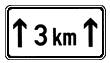

(1) Gefahrzeichen mahnen zu erhöhter Aufmerksamkeit, insbesondere zur Verringerung der Geschwindigkeit im Hinblick auf eine Gefahrsituation (§ 3 Absatz 1).
(2) Außerhalb geschlossener Ortschaften stehen sie im Allgemeinen 150 bis 250 m vor den Gefahrstellen. Ist die Entfernung erheblich geringer, kann sie auf einem Zusatzzeichen angegeben sein, wie
(3) Innerhalb geschlossener Ortschaften stehen sie im Allgemeinen kurz vor der Gefahrstelle.
(4) Ein Zusatzzeichen wie

kann die Länge der Gefahrstrecke angeben.
(5) Steht ein Gefahrzeichen vor einer Einmündung, weist auf einem Zusatzzeichen ein schwarzer Pfeil in die Richtung der Gefahrstelle, falls diese in der anderen Straße liegt.
(6) Allgemeine Gefahrzeichen ergeben sich aus der Anlage 1 Abschnitt 1.
(7) Besondere Gefahrzeichen vor Übergängen von Schienenbahnen mit Vorrang ergeben sich aus der Anlage 1 Abschnitt 2.